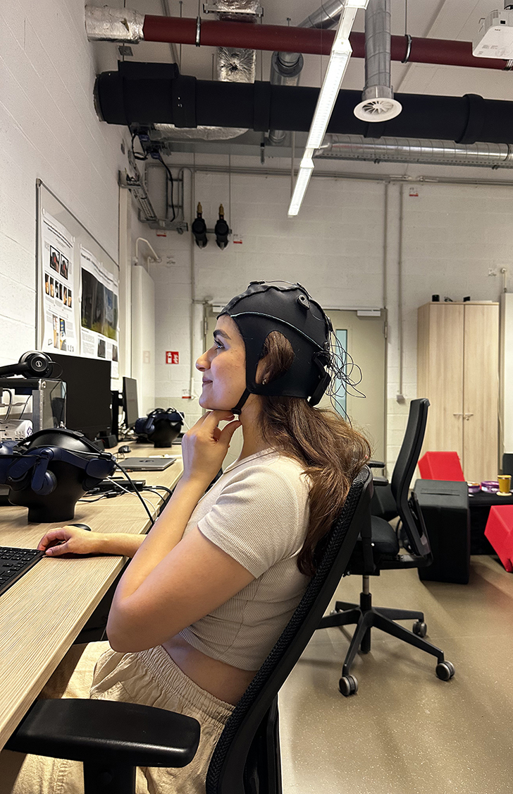
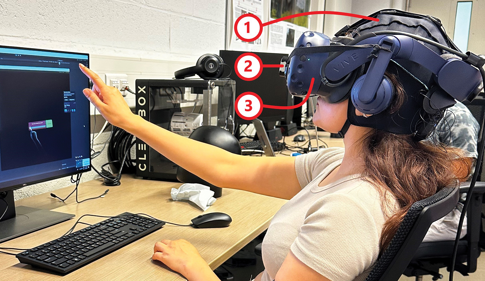
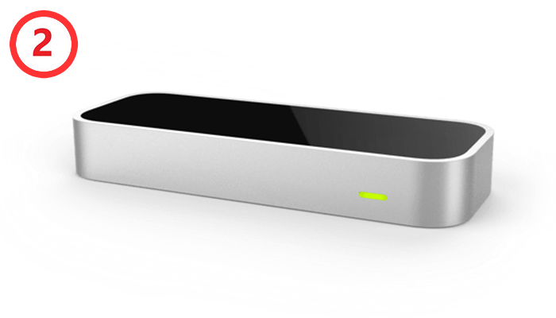
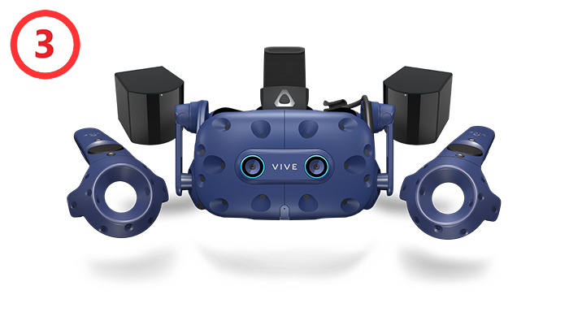

VR/AR Lab & COIN Research Group, @University of Luxembourg
|
 | ||||
|  | |||||
|
 |  | |||
| Unicorn Hybrid Black EEG cap | Leap Motion Controller | HTC Vive Pro Eye VR headset | |||
An example of an event: Cognitive modulator, Medium mode, duration 6 seconds
| Mode | Picture 1 | Picture 2 | Picture 3 | Picture 4 | |
|---|---|---|---|---|---|
| Positive High |
Valence | 91.266† | 81.696† | 6.67 | 6.50 |
| Arousal | 57.636† | 66.009† | 4.04 | 3.08 | |
| Positive Low |
Valence | 94.105† | 97.818† | 6.14 | 6.50 |
| Arousal | 6.599† | 5.851† | 2.86 | 2.75 | |
| Negative Low |
Valence | 50.666† | 49.722† | 2.17 | 2.75 |
| Arousal | 30.559† | 30.598† | 4.63 | 1.88 | |
| Neutral | Valence | 43.063† | 49.541† | 45.176† | 49.675† |
| Arousal | 20.506† | 10.674† | 23.793† | 21.311† | |
| † GAPED scoring system ranging from 0 to 100 ("very negative"/"insignificantly arousing" to "very positive"/"highly arousing"); the rest follows the NAPS rating scale ranging from 1 to 9 ("very negative"/"relaxed" to "very positive"/"aroused"). | |||||
High
Medium
Low
No-Oddball
Relevant
Irrelevant
The audio files used in this modulator were derived from excerpts of Barack Obama's speech at the 2009 White House Correspondents' Dinner, available here.
Slow progressbar
Fast progressbar
The progress bar asset used in this modulator was sourced from the Unity Asset Store.
Topographic map of different band powers for time perception states.
Spectral activity of EEG channels averaged over all participants, grouped by time perception states.
SNR of time perception states in all EEG band powers for each participant.
@Article{Niknam25_brainvr,
author = {Sahar Niknam and Saravanakumar Duraisamy and Jean Botev and Luis A. Leiva},
title = {Brain Signatures of Time Perception in Virtual Reality},
journal = {IEEE Transactions on Visualization and Computer Graphics},
year = {2025},
}
The content of this page is licensed under